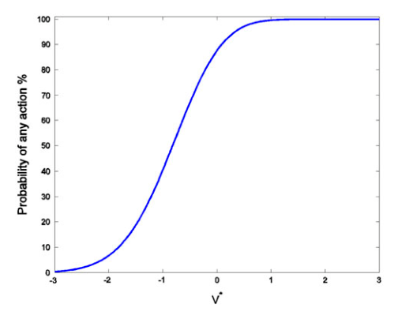

When many can act alone, the most optimistic one decides
Bostrom, Douglas, and Sandberg proved the result in 2016 for actors who share one goal and act on private estimates of its value, the conditions a commercial model release does not meet.
Why this matters
Every few months another lab decides whether to release the weights of a powerful model for anyone to download. The people arguing about that choice keep reaching for the same worry: it only takes one lab to release, and once weights are public they cannot be recalled. In 2016 three Oxford philosophers turned that worry into a formal result and gave it a name, the unilateralist's curse. This lesson builds the result from a single well-meaning actor's decision, shows why adding more actors makes a bad outcome likelier, then tests how far it actually reaches into real model releases, where the proof and the analogy to any single release turn out to be very different things. Serious people who agree the result is true still disagree about what to do with it, and the last section is about why.
- 01
- The model that drives safety to zero needs a lead nobody has held: the neighbouring case where actors are rivals, not the independent well-wishers this result assumes.
- 02
- Bostrom says only luck has kept us from a world-ending technology: the same author on why some releases cannot be taken back.
One optimist is enough to tip the group
Nick Bostrom, Thomas Douglas, and Anders Sandberg describe a situation they say "arises in many contexts." Several actors can each, on their own, carry out some initiative that would affect everyone. Each actor is well-meaning: she goes ahead only if she judges the initiative good for the common good, not for herself. Her judgment is her own, drawn from private information, and it can be wrong in either direction.1
Because any one of them can act alone, the initiative goes ahead the moment a single actor judges it worth doing. The decision falls to whoever is most hopeful about it, not to what the actors believe on average. As the authors put it, "it is the highest estimate that will determine whether an initiative is undertaken, not the average estimate."1 These actors are not rivals, which is what sets the case apart from a race between labs. Nobody is trying to beat anyone. The trouble comes only from the statistics of many independent guesses.
Now suppose the initiative is actually a bad idea, its true value to the common good negative. The group still acts as long as one actor's error is large enough to push her private estimate above zero. And the more actors there are, the likelier it becomes that at least one of them overshoots that far. With five actors whose errors are symmetric around the truth, the initiative is still carried out about half the time even when its true value sits near minus one. That is well into the range where every actor, on average, can see it is a mistake.1

The counting is what bites. Hold the true value at minus one and the chance that someone acts wrongly passes one-half once there are four actors, then climbs toward certainty as more join.1 This is the unilateralist's curse: a group of well-meaning actors, each deciding alone, goes ahead too often, and no one in it has done anything unreasonable by her own lights. The authors' proposed fix is a "principle of conformity." Each actor lowers her own chance of acting alone to the level that would cancel the group's bias. She can share what she knows. She can revise her estimate down on the reasoning that being the most eager actor is itself a sign she has overshot. Or she can defer to a vote or an institution rather than her own first call.1
Four assumptions hold the proof together
What Bostrom, Douglas, and Sandberg have is a piece of decision theory, and it is correct inside its own setup. That setup rests on four assumptions. The actors decide independently. They all want the same thing, the common good, and nothing for themselves. Their errors are private and symmetric, as apt to be too cautious as too reckless. And they are naive, each acting on her first estimate rather than reasoning about what the others will do.1 Each of the four is also a place where the jump from the theorem to a real model release can come apart.
| Assumption | In the model | In a real release |
|---|---|---|
| Independence | Each actor's estimate is formed on its own. | Labs read the same evaluations and papers, so their misjudgments line up instead of cancelling out. |
| One shared goal | Every actor acts only for the common good. | A company also weighs revenue and strategic position, which the model treats as a different problem. |
| Symmetric error | A mistake is as likely too hopeful as too cautious. | Errors may lean one way, and the authors note that skew changes the result. |
| Naive actors | Each acts on a first estimate, alone. | Real actors talk, coordinate, and can reason about being the most eager one in the room. |
The last row is the one the authors press hardest themselves. They show the curse is a curse for naive actors in particular. A sufficiently careful actor can "manage the curse even without communication" by conditioning on the very fact that she is the one about to act, since being the most eager is itself a reason to trust her own estimate less.1 So the result is strong for actors who take their first estimate at face value and weak for ideal reasoners who correct for the setup. Real labs sit somewhere between the two. That gap is exactly where the argument stops being a proof about AI and becomes an analogy to it.
A more hopeful actor undid GPT-2's caution
The clearest real disclosure with this shape is GPT-2. In February 2019 OpenAI withheld the full 1.5-billion-parameter model and put out smaller versions first, warning that the full one could be misused. The caution rested on the model being hard to reproduce. That premise did not hold. In August 2019 two master's students, Aaron Gokaslan and Vanya Cohen, trained a 1.5-billion-parameter model of their own and released the weights. OpenAI released its full model that November.23
-
Feb 2019
OpenAI withholds the full GPT-22
The 1.5-billion-parameter model is held back on misuse grounds; smaller sizes ship first as a staged release.
-
Aug 2019
Two students replicate and release it3
Gokaslan and Cohen rebuild a model of the same size and post the weights, months before OpenAI's own plans.4
-
Nov 2019
OpenAI releases the full model2
The public 1.5-billion-parameter model was set by the most release-inclined actor, not the most cautious one.
That is the curse's shape in a real case: the group outcome, a public model of the size OpenAI held back, was fixed by whoever was keenest to release. It is a shape, not a proof. The students' motives and the way their judgment tracked OpenAI's are not the independent, purely public-spirited estimates the theorem assumes.
The larger present-day version is open-weight release of frontier models. Meta put Llama 2 up for download in July 2023, when rivals kept comparable systems behind paid interfaces, though its licence carries restrictions and its training data stayed undisclosed.5 A year later it released Llama 3.1, including a 405-billion-parameter model, while OpenAI, Anthropic, and Google kept weights of that scale closed. Mark Zuckerberg's stated case is that open weights are safer because more people can inspect them. He adds that withholding does not keep a capable model from a determined adversary, since "stealing models that fit on a thumb drive is relatively easy."6
The governance work that argues against open release reasons in this same structure without using the name. Seger and about two dozen co-authors at the Centre for the Governance of AI conclude that some highly capable models "should not be open-sourced, at least not initially," and propose deliberation and government authorization to "dissipate control away from unilateral decision-makers," which are the paper's own remedies pointed at releases.7 Shevlane and Dafoe turn the publish-or-withhold question on "counterfactual possession," whether an adversary would obtain the capability anyway.8 Neither invokes the curse by name. The named application to AI is scarce, and the sharpest one comes from a critic of the remedy.
Existing institutions may already handle it
Stuart Armstrong, a colleague of the authors, granted that the result "has the advantage of being true" and then argued its practical reach is narrow, because society already corrects for it. International agreements, regulation, and markets force actors to share information and overrule lone optimists across most domains, and those systems are built to work without every actor being individually rational.9
He also pressed the harder point that acting alone is often good. Entrepreneurship and scientific progress depend on people pursuing projects the majority thinks worthless, so the curse "may thus be a valid individual warning for individual entrepreneurs" while it "fails as an overall judgement of the entrepreneurship."9 The authors concede as much. They note that "what is now widely recognized as important progress was instigated by the unilateral actions of mavericks," and that where a group is already too timid, more conformity makes it worse.1 Pressed too far, deferring to the aggregate becomes a veto for the most cautious member.
There is a second edge. When others will reproduce or release the capability regardless, one actor's restraint buys little, which is the counterfactual-possession point put plainly, and GPT-2 is the worked case: the caution did not hold once someone else could act. Armstrong locates where the curse still bites hardest, in tail risks that are new and under-regulated, and names future rather than current artificial intelligence as that kind of case. Even there, he adds, the lesson is caution and not prohibition: an actor "shouldn't rely on their own naive initial judgement," which is a long way from telling her not to act.9
The takeaway
The unilateralist's curse is a proven result, and a narrow one. Give several well-meaning actors the same private-estimate decision and let any one act alone, and the group will go ahead too often, because the most hopeful estimate decides and adding actors only raises the chance one of them overshoots. That much is theorem. Calling any particular model release an instance of the curse is the analogy, and it strains at the seams the proof depends on. Real labs act on mixed motives. Their misjudgments are correlated rather than independent. And they can talk to each other. The piece that carries over most cleanly is the counting. More independent actors holding the same release option does make it likelier that one of them ships. What the result cannot settle is whether lifting the curse is wise, since the same authors admit that acting alone is sometimes how progress arrives, and a withheld capability others can rebuild was never really withheld. How worried to be is left where the evidence leaves it, with you.
- 01
- Bostrom, Douglas & Sandberg's full paper: the model, the figures, and the three routes to conformity, open access under CC-BY.
- 02
- Armstrong's published reply: four pages granting the result and disputing how far it reaches.
Sources
- Social Epistemology · Bostrom, N., Douglas, T. & Sandberg, A., "The Unilateralist's Curse and the Case for a Principle of Conformity" (2016)
- OpenAI · Solaiman, I., Brundage, M., Clark, J. et al., "Release Strategies and the Social Impacts of Language Models" (2019)
- Vanya Cohen · "OpenGPT-2: We Replicated GPT-2 Because You Can Too" (2019)
- TechXplore · "Fake news model in staged release but two researchers fire up replication" (2019)
- MIT Technology Review · Heikkilä, M., "Meta's latest AI model is free for all" (2023)
- Meta · Zuckerberg, M., "Open Source AI Is the Path Forward" (2024)
- Centre for the Governance of AI · Seger, E., Dreksler, N., Moulange, R. et al., "Open-Sourcing Highly Capable Foundation Models" (2023)
- Shevlane, T. & Dafoe, A. · "The Offense-Defense Balance of Scientific Knowledge: Does Publishing AI Research Reduce Misuse?" (2020)
- Social Epistemology Review and Reply Collective · Armstrong, S., "Response to 'The Unilateralist's Curse'" (2016)